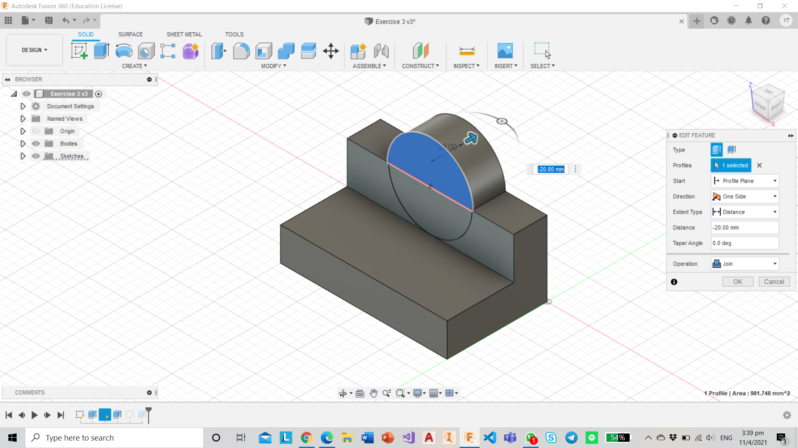

Exercise 3 :
1) First up, create a new sketch and select the XY-plane as the sketch XY-plane
2) Use the "line" command and draw the sketch shown including the necessary dimensions
3) Next, click on the Extrude command under the "Create" tab and change the extrude distance to "-100mm"
4) Once done with the extrusion, create a new sketch on the XZ-axis of the object
5) Draw a diameter 50mm circle at the centre of the object

6) Extrude it by "-20mm"
7) Afterwhich, create a new sketch and draw another diameter 40mm circle
8) Finally, extrude it by "-20mm" and we are DONE with Exercise 3.